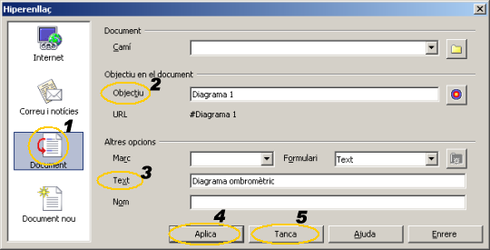
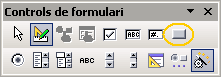
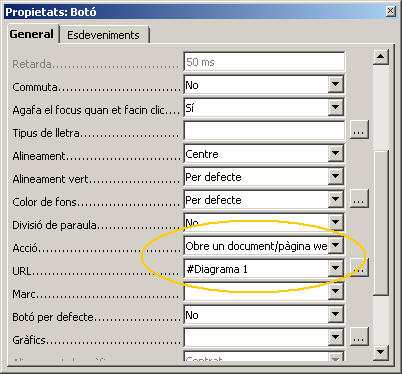

UF4. Fulls de càlcul
G rapida - vincles
Inserir hiperenllaços
En un full de càlcul es poden inserir hiperenllaços a pàgines web, a altres documents i, fins i tot, a altres elements del llibre de càlcul. Els hiperenllaços poden estar associats a textos inserits en una cel·la o a botons.
Hiperenllaços sobre textos a un element del llibre
- Seleccioneu la cel·la on inserireu l'hiperenllaç
- Demaneu l'opció de menú Insereix | Hiperenllaç o bé premeu l'eina Hiperenllaç de la barra d'eines Estàndard
- Feu clic sobre Document del diàleg Hiperenllaç
 - Escriviu al requadre Objectiu en el document / Objectiu la destinació de l'hiperenllaç.
- Una cel·la s'identifica amb la seva referència F25, A12, Full3.F15 …
- Un rang s'identifica amb la referència al rang: A1:F15, o la referència, si en té, al seu nom: Despeses, temperatures
- Un objecte (gràfic, objecte de dibuix, …) s'identifica amb el seu nom: mapa 1, climograma, …
(Per adjudicar nom a un objecte, feu clic sobre l'objecte amb el botó dret i escolliu l'opció Nom de l'objecte, per assignar-li un)
- Escriviu, al requadre Altres opcions / Text el text que voldreu que serveixi de base per a l'hiperenllaç
- Premeu el botó Aplica
- Tot seguit, premeu el botó Tanca
Hiperenllaços sobre botons
- Demaneu Visualitza | Barra d'eines | Controls de formulari
 - Premeu sobre l'eina Botó per prémer
- El punter del ratolí haurà canviat de forma
 ; feu clic sobre el punt on començareu a dibuixar-lo i, sense deixar anar el botó del ratolí, arrossegueu-lo fins que l'objecte tingui la grandària adient
; feu clic sobre el punt on començareu a dibuixar-lo i, sense deixar anar el botó del ratolí, arrossegueu-lo fins que l'objecte tingui la grandària adient - Feu clic, sobre el botó que heu dibuixat, amb el botó dret del ratolí i escolliu l'opció Control
- Cerqueu la propietat Acció, desplegueu-la i escolliu Obre un document/pàgina web
- En la propietat URL escriviu la destinació de l'hiperenllaç (observeu la figura)
- A diferència del cas anterior, els textos dels vincles han d'anar precedits pel símbol #
#Full3.A25, #Diagrama de produccions, #Imatge 3, #A3:F17, …
- Tanqueu el diàleg Propietats:Botó
- Desactiveu la modalitat de disseny prement
 Mode de disseny activat/desactivat
Mode de disseny activat/desactivat - Proveu el botó